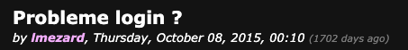
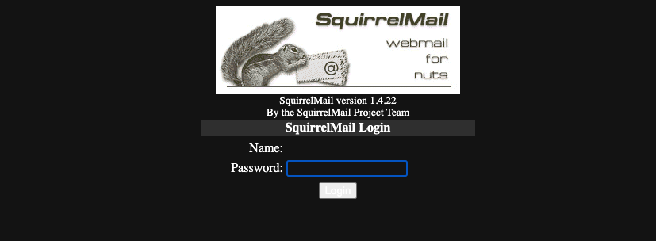

Writeup1
Etape 1 :
Recuperer l'ip de la vm :
faire un arp-scan puis regarder celle qui a pcs systemtechnik gmbh (ici : 192.168.1.50)

Etape 2 :
regarder la ports ouverts
poiur cela on fait un nmap
Etape 3 :
Regarder ce que l'on peut tirer du site web
utiliser dirbuster sous kali linux avec la list medium

Etape 4 :
Regarder sur le forum le probleme login
on peut voir un mot de passe et on "predit" le login et on se connecte
on recupere le mail de la personne

Etape 5 :
aller sur webmail
on met l'adresse de la personne et le mot de passe precedement utilise
on voit ces mails

Etape 6 :
on ouvre le mail
on recupere le user et le mdp
on se connecte a phpmyadmin

Etape 7 :
on est connecter
on teste une injection sql